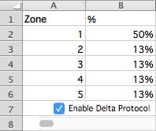
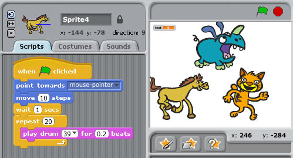
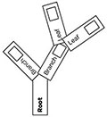
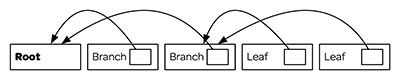

Let’s Begin
A computer is a clock with benefits. They all work the same, doing second-grade math, one step at a time: Tick, take a number and put it in box one. Tick, take another number, put it in box two. Tick, operate (an operation might be addition or subtraction) on those two numbers and put the resulting number in box one. Tick, check if the result is zero, and if it is, go to some other box and follow a new set of instructions.

You, using a pen and paper, can do anything a computer can; you just can’t do those things billions of times per second. And those billions of tiny operations add up. They can cause a phone to boop, elevate an elevator, or redirect a missile. That raw speed makes it possible to pull off not one but multiple sleights of hand, card tricks on top of card tricks. Take a bunch of pulses of light reflected from an optical disc, apply some math to unsqueeze them, and copy the resulting pile of expanded impulses into some memory cells—then read from those cells to paint light on the screen. Millions of pulses, 60 times a second. That’s how you make the rubes believe they’re watching a movie.
Apple has always made computers; Microsoft used to make only software (and occasional accessory hardware, such as mice and keyboards), but now it’s in the hardware business, with Xbox game consoles, Surface tablets, and Lumia phones. Facebook assembles its own computers for its massive data centers.
So many things are computers, or will be. That includes watches, cameras, air conditioners, cash registers, toilets, toys, airplanes, and movie projectors. Samsung makes computers that look like TVs, and Tesla makes computers with wheels and engines. Some things that aren’t yet computers—dental floss, flashlights—will fall eventually.
When you “batch” process a thousand images in Photoshop or sum numbers in Excel, you’re programming, at least a little. When you use computers too much—which is to say a typical amount—they start to change you. I’ve had Photoshop dreams, Visio dreams, spreadsheet dreams, and Web browser dreams. The dreamscape becomes fluid and can be sorted and restructured. I’ve had programming dreams where I move text around the screen.
You can make computers do wonderful things, but you need to understand their limits. They’re not all-powerful, not conscious in the least. They’re fast, but some parts—the processor, the RAM—are faster than others—like the hard drive or the network connection. Making them seem infinite takes a great deal of work from a lot of programmers and a lot of marketers.
The turn-of-last-century British artist William Morris once said you can’t have art without resistance in the materials. The computer and its multifarious peripherals are the materials. The code is the art.
2.1 How Do You Type an “A”?
Consider what happens when you strike a key on your keyboard. Say a lowercase “a.” The keyboard is waiting for you to press a key, or release one; it’s constantly scanning to see what keys are pressed down. Hitting the key sends a scancode.
Just as the keyboard is waiting for a key to be pressed, the computer is waiting for a signal from the keyboard. When one comes down the pike, the computer interprets it and passes it farther into its own interior. “Here’s what the keyboard just received—do with this what you will.”
It’s simple now, right? The computer just goes to some table, figures out that the signal corresponds to the letter “a,” and puts it on screen. Of course not—too easy. Computers are machines. They don’t know what a screen or an “a” are. To put the “a” on the screen, your computer has to pull the image of the “a” out of its memory as part of a font, an “a” made up of lines and circles. It has to take these lines and circles and render them in a little box of pixels in the part of its memory that manages the screen. So far we have at least three representations of one letter: the signal from the keyboard; the version in memory; and the lines-and-circles version sketched on the screen. We haven’t even considered how to store it, or what happens to the letters to the left and the right when you insert an “a” in the middle of a sentence. Or what “lines and circles” mean when reduced to binary data. There are surprisingly many ways to represent a simple “a.” It’s amazing any of it works at all.
Coders are people who are willing to work backward to that key press. It takes a certain temperament to page through standards documents, manuals, and documentation and read things like “data fields are transmitted least significant bit first” in the interest of understanding why, when you expected “ü,” you keep getting “�.”
2.2 From Hardware to Software
Hardware is a tricky business. For decades the work of integrating, building, and shipping computers was a way to build fortunes. But margins tightened. Look at Dell, now back in private hands, or Gateway, acquired by Acer. Dell and Gateway, two world-beating companies, stayed out of software, typically building PCs that came preinstalled with Microsoft Windows—plus various subscription-based services to increase profits.
This led to much cursing from individuals who’d spent $1,000 or more on a computer and now had to figure out how to stop the antivirus software from nagging them to pay up.
Years ago, when Microsoft was king, Steve Ballmer, sweating through his blue button-down, jumped up and down in front of a stadium full of people and chanted, “Developers! Developers! Developers! Developers!”
He yelled until he was hoarse: “I love this company!” Of course he did. If you can sell the software, if you can light up the screen, you’re selling infinitely reproducible nothings. The margins on nothing are great—until other people start selling even cheaper nothings or giving them away. Which is what happened, as free software-based systems such as Linux began to nibble, then devour, the server market, and free-to-use Web-based applications such as Google Apps began to serve as viable replacements for desktop software.
Expectations around software have changed over time. IBM unbundled software from hardware in the 1960s and got to charge more; Microsoft rebundled Internet Explorer with Windows in 1998 and got sued; Apple initially refused anyone else the ability to write software for the iPhone when it came out in 2007, and then opened the App Store, which expanded into a vast commercial territory—and soon the world had Angry Birds. Today, much hardware comes with some software—a PC comes with an operating system, for example, and that OS includes hundreds of subprograms, from mail apps to solitaire. Then you download or buy more.
There have been countless attempts to make software easier to write, promising that you could code in plain English, or manipulate a set of icons, or make a list of rules—software development so simple that a bright senior executive or an average child could do it. Decades of efforts have gone into helping civilians write code as they might use a calculator or write an e-mail. Nothing yet has done away with developers, developers, developers, developers.
Thus a craft, and a professional class that lives that craft, emerged. Beginning in the 1950s, but catching fire in the 1980s, a proportionally small number of people became adept at inventing ways to satisfy basic human desires (know the time, schedule a flight, send a letter, kill a zombie) by controlling the machine. Coders, starting with concepts such as “signals from a keyboard” and “numbers in memory,” created infinitely reproducible units of digital execution that we call software, hoping to meet the needs of the marketplace. Man, did they. The systems they built are used to manage the global economic infrastructure. 1 If coders don’t run the world, they run the things that run the world.
Most programmers aren’t working on building a widely recognized application like Microsoft Word. Software is everywhere. It’s gone from a craft of fragile, built-from-scratch custom projects to an industry of standardized parts, where coders absorb and improve upon the labors of their forebears (even if those forebears are one cubicle over). Software is there when you switch channels and your cable box shows you what else is on. You get money from an ATM—software. An elevator takes you up five stories—the same. Facebook releases software every day to something like a billion people, and that software runs inside Web browsers and mobile applications. Facebook looks like it’s just pictures of your mom’s crocuses or your son’s school play—but no, it’s software.
2.3 How Does Code Become Software?
We know that a computer is a clock with benefits, and that software starts as code, but how?
We know that someone, somehow, enters a program into the computer and the program is made of code. In the old days, that meant putting holes in punch cards. Then you’d put the cards into a box and give them to an operator who would load them, and the computer would flip through the cards, identify where the holes were, and update parts of its memory, and then it would—OK, that’s a little too far back. Let’s talk about modern typing-into-a-keyboard code. It might look like this:
ispal: {x~|x}That’s in a language called, simply, K, famous for its brevity. 2
That code will test if something is a palindrome. If you next typed in ispal "able was i ere i saw elba", K will confirm that yes, this is a palindrome.
So how else might your code look? Maybe like so, in Excel (with all the formulas hidden away under the numbers they produce, and a check box that you can check):
But Excel spreadsheets are tricky, because they can hide all kinds of things under their numbers. This opacity causes risks. One study by a researcher at the University of Hawaii found that 88 percent of spreadsheets contain errors.
Programming can also look like Scratch, a language for kids:
That’s definitely programming right there—the computer is waiting for a click, for some input, just as it waits for you to type an “a,” and then it’s doing something repetitive, and it involves hilarious animals.
Or maybe:
PRINT *, "WHY WON'T IT WORK
END
That’s in Fortran. The reason it’s not working is that you forgot to put a quotation mark at the end of the first line. Try a little harder, thanks.
All of these things are coding of one kind or another, but the last bit is what most programmers would readily identify as code. A sequence of symbols (using typical keyboard characters, saved to a file of some kind) that someone typed in, or copied, or pasted from elsewhere. That doesn’t mean the other kinds of coding aren’t valid or won’t help you achieve your goals. Coding is a broad human activity, like sport, or writing. When software developers think of coding, most of them are thinking about lines of code in files. They’re handed a problem, think about the problem, write code that will solve the problem, and then expect the computer to turn word into deed.
Code is inert. How do you make it ert? You run software that transforms it into machine language. The word “language” is a little ambitious here, given that you can make a computing device with wood and marbles. Your goal is to turn your code into an explicit list of instructions that can be carried out by interconnected logic gates, thus turning your code into something that can be executed—software.
A compiler is software that takes the symbols you typed into a file and transforms them into lower-level instructions. Imagine a programming language called Business Operating Language United System, or Bolus. It’s a terrible language that will have to suffice for a few awkward paragraphs. It has one real command, PRINT. We want it to print HELLO NERDS on our screen. To that end, we write a line of code in a text file that says:
PRINT {HELLO NERDS}And we save that as nerds.bol. Now we run gnubolus nerds.bol, our imaginary compiler program. How does it start? The only way it can: by doing lexical analysis, going character by character, starting with the “p,” grouping characters into tokens, saving them into our one-dimensional tree boxes. Let’s be the computer.
| Character | Meaning |
|---|---|
| P | Hmmmm...? |
| R | Someone say something? |
| I | I’m waiting... |
| N | [drums fingers] |
| T | Any time now... |
| Space | Ah, "PRINT" |
| { | String coming! |
| H | These |
| E | letters |
| L | don’t |
| L | matter |
| O | la |
| Space | la |
| N | just |
| E | saving |
| R | them |
| D | for |
| S | later |
| } | Stringtime is over! |
| End of file | Time to get to work. |
The reason I’m showing it to you is so you can see how every character matters. Computers usually “understand” things by going character by character, bit by bit, transforming the code into other kinds of code as they go. The Bolus compiler now organizes the tokens into a little tree. Kind of like a sentence diagram. Except instead of nouns, verbs, and adjectives, the computer is looking for functions and arguments. Our program above, inside the computer, becomes this:
Trees are a really pleasant way of thinking of the world. Your memo at work has sections that have paragraphs? Tree. Your e-mail program contains messages that contain subject lines and addresses? Tree. Your favorite software program that has a menu bar with individual items that have subitems? Tree. Every day is Arbor Day in Codeville.
Of course, it’s all a trick. If you cut open a computer, you’ll find countless little boxes in rows, places where you can put and retrieve bytes. Everything ultimately has to get down to things in little boxes pointing to each other. That’s just how things work. So that tree is actually more like this:
Every character truly, truly matters. Every single stupid misplaced semicolon, space where you meant tab, bracket instead of a parenthesis—mistakes can leave the computer in a state of panic. The trees don’t know where to put their leaves. Their roots decay. The boxes don’t stack neatly. For not only are computers as dumb as a billion marbles, they’re also positively Stradivarian in their delicacy.
That process of going character by character can be wrapped up into a routine—also called a function, a method, a subroutine, or component. (Little in computing has a single, reliable name, which means everyone is always arguing over semantics.) And that routine can be run as often as you need. Second, you can print anything you wish, not just one phrase. Third, you can repeat the process forever, and nothing will stop you until the machine breaks or, barring that, heat death of the universe. Obviously no one besides Jack Nicholson in The Shining really needs to keep typing the same phrase over and over, and even then it turned out to be a bad idea.
Instead of worrying about where the words are stored in memory and having to go character by character, programming languages let you think of things like strings, arrays, and trees. That’s what programming gives you. You may look over a programmer’s shoulder and think the code looks complex and boring, but it’s covering up repetitive boredom that’s unimaginably vast. 3
This thing we just did with individual characters, compiling a program down into a fake assembly language so that the nonexistent computer can print each character one at a time? The same principle applies to every pixel on your screen, every frequency encoded in your MP3 files, and every imaginary cube in Minecraft. Computing treats human language as an arbitrary set of symbols in sequences. It treats music, imagery, and film that way, too.
It’s a good and healthy exercise to ponder what your computer is doing right now. Maybe you’re reading this on a laptop: What are the steps and layers between what you’re doing and the Lilliputian mechanisms within? When you double-click an icon to open a program such as a word processor, the computer must know where that program is on the disk. It has some sort of accounting process to do that. And then it loads that program into its memory—which means that it loads an enormous to-do list into its memory and starts to step through it. What does that list look like?
Maybe you’re reading this in print. No shame in that. In fact, thank you. The paper is the artifact of digital processes. Remember how we put that “a” on screen? See if you can get from some sleepy writer typing that letter on a keyboard in Brooklyn, N.Y., to the paper under your thumb. What framed that fearful symmetry?
Thinking this way will teach you two things about computers: One, there’s no magic, no matter how much it looks like there is. There’s just work to make things look like magic. And two, it’s crazy in there.
2.4 What Is an Algorithm?
“Algorithm” is a word writers invoke to sound smart about technology. Journalists tend to talk about “Facebook’s algorithm” or a “Google algorithm,” which is usually inaccurate. They mean “software.”
Algorithms don’t require computers any more than geometry does. An algorithm solves a problem, and a great algorithm gets a name. Dijkstra’s algorithm, after the famed computer scientist Edsger Dijkstra, finds the shortest path in a graph. By the way, “graph” here doesn’t mean but rather
Think of a map; streets connect to streets at intersections. It’s a graph! There are graphs all around you. Plumbing, electricity, code compilation, social networks, the Internet, all can be represented as graphs! (Now to monetize …)
Many algorithms have their own pages on Wikipedia. You can spend days poking around them in wonder. Euclid’s algorithm, for example, is the go-to specimen that shows up whenever anyone wants to wax on about algorithms, so why buck the trend? It’s a simple way of determining the greatest common divisor for two numbers. Take two numbers, like 16 and 12. Divide the first by the second. If there’s a remainder (in this case there is, 4), divide the first, 16, by that remainder, 4, which gives you 4 and no remainder, so we’re done—and 4 is the greatest common divisor. (Now translate that into machine code, and we can get out of here.)
There’s a site called Rosetta Code that shows you different algorithms in different languages. The Euclid’s algorithm page is great. Some of the examples are suspiciously long and laborious, and some are tiny nonsense poetry, like this one, in the language Forth:4
: gcd ( a b -- n )
begin dup while tuck mod repeat drop ;Read it out loud, preferably to friends. Forth is based on the concept of a stack, which is a special data structure. You make “words” that do things on the stack, building up a little language of your own. PostScript, 5 the language of laser printers, came after Forth but is much like it. Look at how similar the code is, give or take some squiggles:
/gcd {
{
{0 gt} {dup rup mod} {pop exit} ifte
} loop
}.And that’s Euclid’s algorithm in PostScript. I admit, this might be fun only for me. Here it is in Python (all credit to Rosetta Code):
def gcd(u, v):
return gcd(v, u % v) if v else abs(u)A programming language is a system for encoding, naming, and organizing algorithms for reuse and application. It’s an algorithm management system. This is why, despite the hype, it’s silly to say Facebook has an algorithm. An algorithm can be translated into a function, and that function can be called (run) when software is executed. There are algorithms that relate to image processing and for storing data efficiently and for rapidly running through the elements of a list. Most algorithms come for free, already built into a programming language, or are available, organized into libraries, for download from the Internet in a moment. You can do a ton of programming without actually thinking about algorithms—you can save something into a database or print a Web page by cutting and pasting code. But if you want the computer to, say, identify whether it’s reading Spanish or Italian, you’ll need to write a language-matching function. So in that sense, algorithms can be pure, mathematical entities as well as practical expressions of ideas on which you can place your grubby hands.
Dijkstra distributed a remarkable and challenging set of 18 memos to the global computer science community, starting in the 1960s and continuing up until his death in 2002, known as “EWDs,” many of them handwritten.
One thing that took me forever to understand is that computers aren’t actually “good at math.” They can be programmed to execute certain operations to certain degrees of precision, so much so that it looks like “doing math” to humans. 6 Dijkstra said: “Computer science is no more about computers than astronomy is about telescopes.” 7 A huge part of computer science is about understanding the efficiency of algorithms—how long they will take to run. Computers are fast, but they can get bogged down—for example, when trying to find the shortest path between two points on a large map. Companies such as Google, Facebook, and Twitter are built on top of fundamental computer science 8 and pay great attention to efficiency, because their users do things (searches, status updates, tweets) an extraordinary number of times. Thus it’s absolutely worth their time to find excellent computer scientists, many with doctorates, who know where all the efficiencies are buried.
It takes a good mathematician to be a computer scientist, but a middling one to be an effective programmer. Until you start dealing with millions of people on a network or you need to blur or sharpen a million photos quickly, you can just use the work of other people. When it gets real, break out the comp sci. When you’re doing anything a hundred trillion times, nanosecond delays add up. Systems slow down, users get cranky, money burns by the barrel. 9
The hardest work in programming is getting around things that aren’t computable, in finding ways to break impossible tasks into small, possible components, and then creating the impression that the computer is doing something it actually isn’t, like having a human conversation. This used to be known as “artificial intelligence research,” but now it’s more likely to go under the name “machine learning” or “data mining.” When you speak to Siri or Cortana and they respond, it’s not because these services understand you; they convert your words into text, break that text into symbols, then match those symbols against the symbols in their database of terms, and produce an answer. Tons of algorithms, bundled up and applied, mean that computers can fake listening.
A programming language has at least two jobs, then. It needs to wrap up lots of algorithms so they can be reused. Then you don’t need to go looking for a square-root algorithm (or a genius programmer) every time you need a square root. And it has to make it easy for programmers to wrap up new algorithms and routines into functions for reuse. The DRY principle, for Don’t Repeat Yourself, is one of the colloquial tenets of programming. That is, you should name things once, do things once, create a function once, and let the computer repeat itself. This doesn’t always work. Programmers repeat themselves constantly. I’ve written certain kinds of code a hundred times. This is why DRY is a principle.
Enough talk. Let’s code!
2.5 The Sprint
After a few months the budget is freed up, and the Web re-architecture project is under way. They give it a name: Project Excelsior. Fine. TMitTB (who, to be fair, has other clothes and often dresses like he’s in Weezer) checks in with you every week.
He brings documents. Every document has its own name. The functional specification is a set of at least a thousand statements about users clicking buttons. “Upon accessing the Web page the user if logged in will be identified by name and welcomed and if not logged in will be encouraged to log in or create an account. (See user registration workflow.)”
God have mercy on our souls. From there it lists various error messages. It’s a sort of blueprint in that it describes—in words, with occasional diagrams—a program that doesn’t exist.
Some parts of the functional specification refer to “user stories,” tiny hypothetical narratives about people using the site, e.g., “As a visitor to the website, I want to search for products so I can quickly purchase what I want.” 10
Then there’s something TMitTB calls wireframe mock-ups, which are pictures of how the website will look, created in a program that makes everything seem as if it were sketched by hand, all a little squiggly—even though it was produced on a computer. This is so no one gets the wrong idea about these ideas-in-progress and takes them too seriously. Patronizing, but point taken.
You rarely see TMitTB in person, because he’s often at conferences where he presents on panels. He then tweets about the panels and notes them on his well-populated LinkedIn page. Often he takes a picture of the audience from the stage, and what you see is an assembly of mostly men, many with beards, the majority of whom seem to be peering into their laptop instead of up at the stage. Nonetheless the tweet that accompanies that photo says something like, “AMAZING audience! @ the panel on #microservice architecture at #ArchiCon2015.”
He often tells you just how important this panel-speaking is for purposes of recruiting. Who’s to say he is wrong? It costs as much to hire a senior programmer as it does to hire a midlevel executive, so maybe going to conferences is his job, and in the two months he’s been here he’s hired four people. His two most recent hires have been in Boston and Hungary, neither of which is a place where you have an office.
But what does it matter? Every day he does a 15-minute “standup” meeting via something called Slack, which is essentially like Google Chat but with some sort of plaid visual theme, and the programmers seem to agree that this is a wonderful and fruitful way to work.
“I watch the commits,” TMitTB says. Meaning that every day he reviews the code that his team writes to make sure that it’s well-organized. “No one is pushing to production without the tests passing. We’re good.”
Your meetings, by comparison, go for hours, with people arranged around a table—sitting down. You wonder how he gets his programmers to stand up, but then some of them already use standing desks. Perhaps that’s the ticket.
Honestly, you would like to go to conferences sometimes and be on panels. You could drink bottled water and hold forth just fine.
2.6 What’s With All These Conferences, Anyway?
Conferences! The website Lanyrd lists hundreds of technology conferences for June 2015. There’s an event for software testers in Chicago, a Twitter conference in São Paulo, and one on enterprise content management in Amsterdam. In New York alone there’s the Big Apple Scrum Day, the Razorfish Tech Summit, an entrepreneurship boot camp for veterans, a conference dedicated to digital mapping, many conferences for digital marketers, one dedicated to Node.js, one for Ruby, and one for Scala (these are programming languages), a couple of breakfasts, a conference for cascading style sheets, one for text analytics, and something called the Employee Engagement Awards.
Tech conferences look like you’d expect. Tons of people at a Sheraton, keynote in Ballroom D. Or enormous streams of people wandering through South by Southwest in Austin. People come together in the dozens or thousands and attend panels, ostensibly to learn; they attend presentations and brush up their skills, but there’s a secondary conference function, one of acculturation. You go to a technology conference to affirm your tribal identity, to transfer out of the throng of dilettantes and into the zone of the professional. You pick up swag and talk to vendors, if that’s your thing.
Second row:Nvidia GPU, San Jose, September 2010; South by Southwest (SXSW) Interactive Festival, Austin, March 2013; Apple Worldwide Developers Conference (WWDC), San Francisco, June 2008
Third row: TechCrunch Disrupt NYC, May 2012; Re:publica conference, Berlin, May 2015; TechCrunch Disrupt NYC, May 2015
Fourth row: SXSW Interactive Festival, Austin, March 2014; WWDC, San Francisco, June 2015; Bloomberg Technology Conference!, San Francisco, June 15-16
Technology conferences are where primate dynamics can be fully displayed, where relationships of power and hierarchy can be established. There are keynote speakers—often the people who created the technology at hand or crafted a given language. There are the regular speakers, often paid not at all or in airfare, who present some idea or technique or approach. Then there are the panels, where a group of people are lined up in a row and forced into some semblance of interaction while the audience checks its e-mail.
I’m a little down on panels. They tend to drift. I’m not sure why they exist.
Here’s the other thing about technology conferences: There has been much sexual harassment and much sexist content in conferences. Which is stupid, because computers are dumb rocks lacking genitalia, but there you have it.
Women in software, having had enough, started to write it up, post to blogs. Other women did the same. The problem is pervasive: There are a lot of conferences, and there have been many reports of harassing behavior. The language Ruby, the preferred language for startup bros, developed the worst reputation. At a Ruby conference in 2009, someone gave a talk subtitled “Perform Like a Pr0n Star,” with sexy slides. That was dispiriting. There have been criminal incidents, too.
Conferences began to develop codes of conduct, rules and algorithms for people (men, really) to follow.
If you are subject to or witness unacceptable behavior, or have any other concerns, please notify a community organizer as soon as possible …
—Burlington Ruby Conference
php[architect] is dedicated to providing a harassment-free event experience for everyone and will not tolerate harassment or offensive behavior in any form.
—php[architect]
The Atlanta Java Users Group (AJUG) is dedicated to providing an outstanding conference experience for all attendees, speakers, sponsors, volunteers, and organizers involved in DevNexus (GeekyNerds) regardless of gender, sexual orientation, disability, physical appearance, body size, race, religion, financial status, hair color (or hair amount), platform preference, or text editor of choice.
—devnexus
When people started talking about conference behavior, they also began to talk about the larger problems of programming culture. This was always an issue, but the conference issues gave people a point of common reference. Why were there so many men in this field? Why do they behave so strangely? Why is it so hard for them to be in groups with female programmers and behave in a typical, adult way?
“I go to work and I stick out like a sore thumb. I have been mistaken for an administrative assistant more than once. I have been asked if I was physical security (despite security wearing very distinctive uniforms),” wrote Erica Joy Baker on Medium.com who has worked, among other places, at Google.Δ The original version of this story did not name Baker or link to her post. Thanks to @EricaJoy on GitHub
Famous women in coding history
Ada Lovelace: The first programmer. She devised algorithms for Charles Babbage’s “analytical engine,” which he never built.
Grace Murray Hopper: World War II hero and inventor of the compiler.
“Always the only woman in the meeting, often the first—the first female R&D engineer, first female project lead, first female software team lead—in the companies I worked for,” wrote another woman in Fast Company magazine.
Fewer than a fifth of undergraduate degrees in computer science awarded in 2012 went to women, according to the National Center for Women & Information Technology. Less than 30 percent of the people in computing are women. And the number of women in computing has fallen since the 1980s, even as the market for their skills has expanded. The pipeline is a huge problem. And yet it’s not unsolvable. I’ve met managers who have built perfectly functional large teams that are more than half female coders. Places such as the handicrafts e-commerce site Etsy have made a particular effort to develop educational programs and mentorship programs. Organizations such as the not-for-profit Girl Develop It teach women, and just women, how to create software.
It’s all happening very late in the boom, though. In 2014 some companies began to release diversity reports for their programming teams. It wasn’t a popular practice, but it was revealing. Intel is 23 percent female; Yahoo! is 37 percent. Apple, Facebook, Google, Twitter, and Microsoft are all around 30 percent. These numbers are for the whole companies, not only programmers. That’s a lot of women who didn’t get stock options. The numbers of people who aren’t white or Asian are worse yet. Apple just gave $50 million to fund diversity initiatives, equivalent to 0.007 percent of its market cap. Intel has a $300 million diversity project.
The average programmer is moderately diligent, capable of basic mathematics, has a working knowledge of one or more programming languages, and can communicate what he or she is doing to management and his or her peers. Given that a significant number of women work as journalists and editors, perform surgery, run companies, manage small businesses, and use spreadsheets, that a few even serve on the Supreme Court, and that we are no longer surprised to find women working as accountants, professors, statisticians, or project managers, it’s hard to imagine that they can’t write JavaScript. Programming, despite the hype and the self-serving fantasies of programmers the world over, isn’t the most intellectually demanding task imaginable.
Which leads one to the inescapable conclusion: The problem with women in technology isn’t the women.